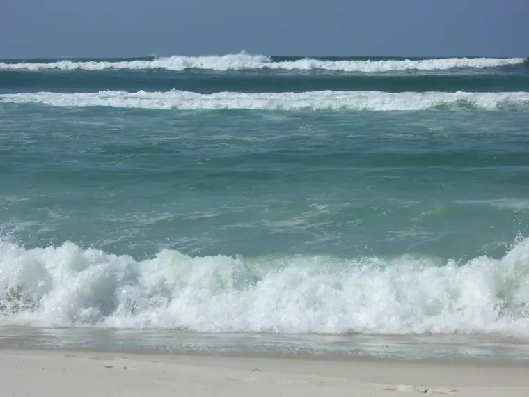
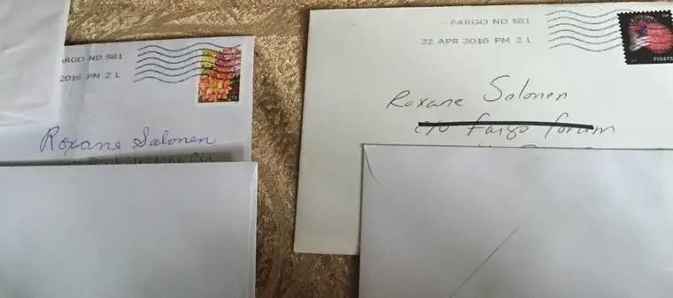

I was in sixth grade when Blondie’s song, “The tide is high,” went big. My friend Traci and I hid in her room filled with posters of Blondie, Rod Stewart and KISS, along with her nearly retired Barbie dolls, and let the sounds coming from the little black disk spinning on the record player transport us to the center of the sea in the land of love.
This week, I heard the song faintly in my memory again as the earth shifted below me, and the tide turned with it.

I had been sensing the change, but it finally became abundantly apparent to me Thursday afternoon. I’d gone to Mass with my friend Ann Marie, and as we knelt at the conclusion, I felt the brush of someone nearby. Soon, he was kneeling alongside me, apologizing for the breach, but on a mission it seemed.
“I’m sorry to stop you mid-prayer,” he said, “but I just had to tell you…”
I wasn’t caught off guard completely. Throughout Mass, I’d sensed his gaze flitting over to me on occasion, as if waiting for a chance. My hunch was right. He had something to tell me — something that had been building. It had to do with the controversy that had broken out a couple weeks before, after a column I’d written had stirred up unrest within our community, sending a wave of letters to the editor splashing along the shoreline.
Noticing me there in the daily Mass chapel, and listening to the Holy Spirit promptings, apparently, he seized the moment, blessing me with his words. It was the final check-mark affirming that the tide had changed. I was no longer alone, wandering in an ocean of misunderstanding. The lifelines that had been thrown out to me had reached their intended target, and with their help, I’d overcome the undertows.
I don’t want to say too much more about this visit because it felt private to me, but I will share that it reinforced my growing realization that God had never abandoned me. Though my April 16 column had set off a firestorm of fury that rippled out into our community and beyond, and God’s voice grew very still for a time, it was never completely silent. And now? Well, it was booming in all directions.
God had just been waiting, it seems to me now; waiting for me to feel his pain, his suffering, his loneliness so I could experience it with him. Though he didn’t will my suffering, he allowed it; allowed me to feel what he felt when it seemed the world had abandoned him with cries of “Crucify him! Crucify him!” For the angry mob had come onto my path, too.
And yet, even in the midst of that, I remembered my offering to God that he use me in whatever way he pleased, for his glory. And I knew that what I was undergoing was part of the following through of that surrender.
I am in no way comparing myself to Jesus the Christ, but I did connect with his moments of disillusionment in his last days of earthly life in a way I never had before, and felt it deeply.
But now, after periods of dark quiet, I am experiencing the Resurrection. It’s still just a glance — not the real thing — but just like Jesus’ rising helped the apostles begin to understand everything they had witnessed up to that point, I, too, am starting to see in a more illuminated fashion.
As the tide rolls in, I am a seagull flying above, eyeing the shoreline, appreciating anew the vastness of God and his goodness. Had I not gone through this trial, this feeling of redemption would not have been nearly as complete or lovely.
Now on the other side of it, I hear God’s voice amplified; I see his beautiful, sacred heart radiate; I feel his merciful soul envelope, like an eternal mist of love.
To catch you all up: the column here. Which was followed by letters to the editor on April 19 here, April 21 here, April 22 here and here, interrupted by a radio interview and news story on April 20 here (within which was embedded a blog post from Psychology Today blogger and local professor here) and more letters April 23 here and here, and an April 23 blog reposted later in The Forum here. That was followed by this letter on April 26. A newspaper Facebook page collected some of the most venomous comments here, including one from a former college friend who likened me to an American version of the Taliban. The tide switched courses on April 26 here, followed by others on April 27 here, and here. And one final contention in the round straggled in yesterday, here.[Since this post, a few more have come in, including this letter on April 30, as well as this one and this one on May 2, and this one on May 3. Oh, and another May 4 here. Wow!]
These could be seen publicly; other correspondence happened privately, both troubling and tender, in letters of hate and of love in my mailbox and inbox…

I know another tide may come later. In fact, it’s fairly certain. A friend recently shared that those most open to God’s will often take the brunt of spiritual attack. My surrender will come at a cost, but an efficacious one in the end, I fully trust. For now, steady and strong and newly fortified in so many ways, I stand evermore grateful for God’s consolations.
This coming week, I will have a beautiful chance to bring what has taken place back into the public square once again as I represent the media sector during our community’s nondenominational National Day of Prayer 2016. It will happen from 6:30 to 7:30 p.m. at the Holiday Inn, Fargo. All are invited and prayers are welcomed both before, and afterward.
Finally, I want to share something a loved one sent my way to help keep me tethered. I found it helpful and true:
Q4U: When have you felt the tide change, and welcomed it?